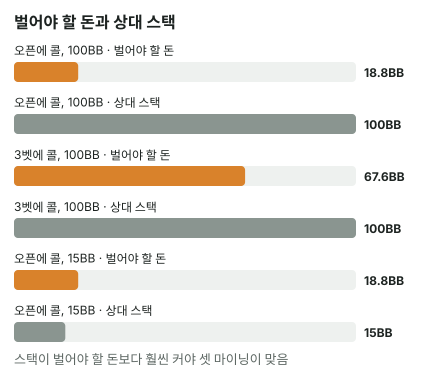

안녕하세요. 55·44 같은 작은 포켓페어를 들고 상대 오픈을 받으면 고민되죠. 플랍에 5가 떨어지면 아주 강해지는데, 대부분의 플랍에서는 그냥 작은 페어로 남거든요.
I09에서 "맞으면 더 받아낼 수 있다"는 임플라이드 오즈를 금액으로 따져 봤죠. 오늘은 그 생각을 프리플랍 작은 페어에 그대로 가져와요. 셋 마이닝이 언제 이득인지, 그리고 왜 상대 스택이 답을 정하는지 처음부터 볼게요.
이 글에서 배울 것
- 작은 페어가 플랍에 셋 이상이 될 확률을 직접 세는 법
- 셋이 됐을 때 얼마를 벌어야 본전인지 구하는 식과, 그 금액이 늘 콜의 약 7.51배인 이유
- 그 금액이 상대 스택의 몇 분의 몇인지로 "얼마나 깊어야 하나"에 답하는 법, 그리고 계산이 실전보다 좋게 나오는 이유
오늘의 장면
캐시 게임, 두 사람 모두 깊은 스택이에요. 상대가 2.5BB로 오픈했고 다른 사람은 다 접었어요. Hero는 버튼에서 5♠5♥를 들었어요. 계산을 단순하게 하려고 Hero가 콜한 뒤 블라인드도 따라오지 않는다고 칠게요.


Hero가 콜하면 낼 돈은 2.5BB, 상대 유효 스택(두 사람 중 작은 쪽 스택)은 100BB예요.
1단계. 셋 마이닝이 뭔가요?
한 줄 정의
셋 = 포켓페어가 보드의 같은 숫자 한 장을 만나 같은 숫자 세 장이 된 것이에요. 5♠5♥에 플랍 5♦가 나오면 셋이에요.
셋 마이닝 = 지금 핸드의 힘이 아니라 셋이 되는 순간을 노리고 프리플랍에 콜하는 거예요. 셋이 안 되면 플랍에서 미련 없이 놓는다는 계획까지 포함해요.
비유
셋 마이닝은 꽝이 많은 대신 당첨금이 큰 뽑기예요. 한 번 뽑는 값은 싸지만, 꽝이 계속 나와도 버틸 만큼 당첨금이 커야 남는 장사가 돼요. 오늘 계산은 결국 두 가지를 묻는 거예요. 얼마나 자주 당첨되나, 그리고 당첨금이 그만큼 큰가.
2단계. 플랍에 셋 이상이 될 확률
남은 5는 두 장
Hero 손에 5가 두 장 있으니, 덱에 남은 5는 2장이에요. Hero가 모르는 카드는 52장에서 Hero 손 2장을 뺀 50장이에요.
한 장도 안 나올 확률부터
"하나라도 나올 확률"은 바로 세기 번거로워요. 거꾸로 세 장 모두 5가 아닐 확률을 먼저 구해요.
- 플랍 첫 장이 5가 아닐 확률: 50장 중 48장
- 둘째 장도 아닐 확률: 남은 49장 중 47장
- 셋째 장도 아닐 확률: 남은 48장 중 46장
세 장 모두 5가 아닐 확률 = (48 ÷ 50) × (47 ÷ 49) × (46 ÷ 48) = 약 88.24%
그러니 플랍에 5가 한 장 이상 나와서 셋 이상이 될 확률은 약 11.76%예요.
"셋 이상"이라고 한 건, 5가 두 장 다 나오면 쿼드(같은 숫자 네 장)가 되고, 셋에 보드 페어가 붙으면 풀하우스가 되기 때문이에요. 오늘은 이것까지 모두 "맞았다"로 셀게요.
다른 말로 하면
모르는 50장에서 플랍 세 장을 고르는 경우를 전부 세면 19,600가지예요. 그중 2,304가지에서 맞고 17,296가지에서 빗나가요. 빗나가는 플랍이 맞는 플랍보다 17296 ÷ 2304 = 약 7.51배 많아요.
대충 말하면 8번 중 1번쯤 맞는 뽑기예요. 이게 무슨 뜻이냐면, 셋 마이닝은 7번 넘게 꽝을 보고 1번 당첨되는 장사라는 거예요.
3단계. 셋이 됐을 때 얼마를 벌어야 본전일까?
오늘 세우는 가정
계산을 깔끔하게 하려고 이렇게 가정해요.
- 셋 이상이 되면 Hero가 이긴다
- 셋이 안 되면 플랍에서 바로 포기한다(콜한 2.5BB만 잃고, 더 내지도 블러프로 따내지도 않음)
19,600번 콜해 보기
I09에서 리버 46장을 한 장씩 깔아 봤던 것처럼, 플랍 19,600가지가 한 번씩 나온다고 치고 따라가 볼게요(합계는 BB 단위).
- 빗나가는 17,296번: 매번 2.5BB를 잃어요 → 17296 × 2.5 = 43240을 잃어요
- 맞는 2,304번: 이 손해를 전부 메워야 본전이에요
맞을 때마다 벌어야 하는 돈 = 43240 ÷ 2304 = 약 18.77BB
공식으로 묶으면
셋일 때 벌어야 하는 총액 = 못 될 확률 × 콜 ÷ 될 확률 = 0.88245 × 2.5 ÷ 0.11755 = 약 18.77BB
"못 될 확률 ÷ 될 확률"이 2단계의 약 7.51이니, 식은 결국 콜 × 약 7.51이에요. 콜이 얼마든 셋일 때 벌어야 하는 돈은 콜의 약 7.51배예요.
"총액"에 무엇이 들어가나
약 18.77BB는 셋이 된 판에서 폴드했을 때와 비교해 늘어나는 돈 전부예요. 이미 팟에 있던 상대 오픈과 블라인드, 그리고 플랍·턴·리버에서 상대가 더 내주는 돈이 다 들어가요.
I09의 말로 바꾸면, 이 총액에서 이미 팟에 있던 돈을 뺀 나머지가 플랍 이후에 상대에게서 더 받아내야 하는 몫이에요. 이게 무슨 뜻이냐면, 셋이 될 때마다 평균 약 18.77BB를 거둬들일 수 있다고 기대할 때만 이 콜이 본전 이상이라는 거예요.
7.51배는 페어 숫자와 상관없어요
22든 99든 남은 같은 숫자는 늘 2장이라, 셋이 될 확률도 7.51배도 똑같아요. 식에서 바뀌는 건 콜 금액 하나뿐이에요. 그래서 셋 마이닝의 출발점은 "어떤 페어냐"보다 "얼마를 내고 보러 가느냐"예요.
다만 "셋이 되면 이긴다"는 가정까지 같은 건 아니에요. 셋이 됐을 때 실제로 이기는 비율은 페어마다 달라서(5단계의 셋 오버 셋), 작은 페어일수록 실제로 필요한 스택은 조금 더 커져요. 7.51배는 모든 페어에 똑같은 바닥이고, 그 위에 얼마를 더 얹을지가 페어마다 달라요.
4단계. 그래서 상대 스택이 답을 정해요
당첨금에는 천장이 있어요
셋이 됐을 때 받을 수 있는 돈은 무한하지 않아요. 상대 스택 전부 + 블라인드처럼 상대 것이 아닌 팟 돈이 천장이에요. 상대 오픈은 이미 상대 스택에서 나온 돈이라 두 번 세지 않아요.
그래서 셋 마이닝은 "벌어야 하는 돈"과 "받을 수 있는 천장"의 비교예요. 둘을 콜 금액으로 나눠 보면 한눈에 보여요.
| 상황 | 콜 | 셋일 때 벌어야 할 돈 | 상대 유효 스택 | 스택 ÷ 콜 |
|---|---|---|---|---|
| 오픈에 콜, 깊은 스택 | 2.5BB | 약 18.77BB | 100BB | 40배 |
| 3벳에 콜 | 9BB | 약 67.56BB | 100BB | 약 11.11배 |
| 오픈에 콜, 짧은 스택 | 2.5BB | 약 18.77BB | 15BB | 6배 |
읽는 법: 벌어야 할 돈은 늘 콜의 약 7.51배예요. 블라인드 같은 팟 돈을 빼고 어림하면, "스택 ÷ 콜"이 7.51 근처를 넘어야 계산이 성립해요(블라인드가 팟에 있으면 그만큼 선이 조금 내려와요).
진짜 기준: 스택의 몇 분의 몇을 받아야 하나
"넘느냐"만으로는 부족해요. 더 쓸모 있는 질문은 "셋이 될 때마다 상대 스택의 몇 분의 몇을 받아야 본전인가"예요. 이 몫이 작을수록 받아내기 쉽고, 클수록 어려워요.
왜 그럴까요? 셋이 돼도 상대가 플랍에서 바로 접는 판이 있고, 상대가 끝까지 와도 셋이 지는 판이 있어요. 그런 판까지 섞어서 평균을 맞춰야 하니, 스택의 작은 몫만 받아도 되는 장면이어야 여유가 생겨요.
세 줄을 하나씩
- 오픈에 콜, 100BB: 스택이 콜의 40배예요. 셋이 될 때 상대 스택의 5분의 1쯤만 받아도 본전이라, 해 볼 만한 콜이에요
- 3벳에 콜: Hero가 2.5BB로 오픈했는데 상대가 3벳해서, 이번에 더 내야 하는 돈이 9BB인 경우예요(이미 낸 2.5BB는 폴드해도 돌아오지 않으니 콜 금액에 넣지 않아요). 콜이 커지자 벌어야 할 돈도 약 67.56BB로 커졌어요. 셋이 될 때마다 상대 스택의 3분의 2쯤을 평균으로 받아내야 하니 훨씬 빡빡해요
- 오픈에 콜, 15BB: 스택이 콜의 6배라 7.51배에 못 미쳐요. 셋이 될 때마다 상대 스택을 전부 받아도 약 18.77BB에 닿지 않아요. 이 콜은 셋 마이닝만으로는 계산상 손해예요
이게 무슨 뜻이냐면, 제목의 "얼마나 깊어야"의 답은 "벌어야 할 돈(콜 × 약 7.51)이 상대 스택의 작은 몫이 될 만큼"이라는 거예요. 5분의 1쯤이면 해 볼 만하고, 3분의 2쯤이면 빡빡하고, 전부로도 모자라면 손해예요.

5단계. 셋 마이닝에만 있는 함정
I09에서 본 임플라이드 오즈의 함정(늘 받는 건 아니다, 맞아도 질 수 있다)은 여기에도 그대로 있어요. 그래서 7.51배는 바닥이에요. 셋 마이닝에는 거기에 더해 이 장면만의 모습이 있어요.
셋 오버 셋: 작은 페어일수록 위에 셋이 많아요
55가 셋이 됐는데 상대도 포켓페어를 들고 셋이 됐다고 해 볼게요. 55보다 높은 페어(66~AA)는 숫자 종류가 아홉 개, 낮은 페어(22~44)는 세 개라, 작은 페어의 셋은 셋끼리 붙으면 지는 쪽이 되기 쉬워요. 그리고 이런 판은 양쪽 다 강해서 스택이 다 들어가기 쉬워요.
셋에 돈을 내주는 핸드가 있어야 해요
셋이 돼도 상대가 큰돈을 넣으려면 상대도 강한 핸드를 들어야 해요. 오버페어나 탑페어처럼 "이 정도면 괜찮다"고 느끼는 핸드요. 상대가 A♥Q♥로 오픈했는데 플랍이 K♣9♦5♣이면, 상대는 아무것도 없어서 Hero의 셋에 거의 돈을 내지 않아요. 오픈 레인지에 잘 맞는 플랍에서만 큰 판이 열린다는 뜻이에요.
왜 그럴까: 셋 마이닝의 값은 상대 스택 안에만 있다
보통의 콜은 "지금 팟에 대해 이길 확률이 충분한가"로 판단해요. 작은 페어는 그렇게 보기 어려운 핸드예요. 셋이 안 되면 거의 내려놓고, 셋이 되면 강한 핸드가 되죠. 중간이 거의 없어요.
그래서 이 콜의 값은 전부 셋이 된 뒤에 받아낼 돈에서 나와요. 그런데 그 돈은 상대 스택을 넘을 수 없어요. 확률(7.51배)은 고정이고 콜 금액은 Hero가 보고 있으니, 남은 변수는 상대 스택 하나예요. 제목의 질문이 "핸드가 얼마나 좋아야"가 아니라 "상대 스택이 얼마나 깊어야"인 이유가 여기 있어요.
자주 하는 실수
실수 1. 콜 금액만 보고 상대 스택을 안 보기 "2.5BB면 싸니까 셋 보러 가자"는 생각은 콜 금액만 본 거예요. 같은 2.5BB라도 상대가 100BB면 스택이 콜의 40배지만, 15BB면 6배라 7.51배에도 못 미쳐요. 콜하기 전에 상대가 얼마를 가졌는지를 먼저 봐요.
실수 2. 3벳 콜도 오픈 콜과 같은 느낌으로 하기 작은 페어로 오픈 콜을 하던 감각 그대로 3벳에도 콜하면, 콜이 9BB로 커진 걸 놓쳐요. 벌어야 할 돈은 콜에 비례해서 약 67.56BB가 돼요. 콜이 커지면 필요한 스택도 같은 비율로 커진다는 걸 기억해요.
실수 3. 7.51배를 넘기만 하면 된다고 생각하기 3벳 콜 줄처럼 "스택이 콜의 약 11.11배니까 7.51배는 넘었다"로 끝내면, 셋이 될 때마다 상대 스택의 3분의 2쯤을 받아야 한다는 사실을 놓쳐요. 7.51배는 셋이 늘 이기고 상대가 늘 돈을 다 내준다고 칠 때의 바닥이에요. 판단은 "몇 분의 몇을 받아야 하나"까지 가서 해요.
"셋이 아니어도 플랍에서 이길 때가 있잖아요?"
좋은 질문이에요. 맞아요. 플랍이 K♣9♦2♠인데 상대가 A♥Q♥처럼 아무것도 못 맞췄다면 55로도 이길 수 있어요. 오늘은 계산을 단순하게 하려고 그 몫을 0으로 뒀어요.
그 몫까지 넣으려면 상대가 들 수 있는 핸드 전체를 상대로 한 에퀴티가 필요해요. 그건 핸드 대 레인지 에퀴티로 따지는데, I06에서 다뤄요. 오늘 계산은 그 몫을 빼서 보수적인 바닥을 잡은 거예요.
숫자가 뒤집히는 지점
기준은 상대 유효 스택(과 이미 팟에 있던 돈)이 "콜 × 약 7.51"보다 넉넉히 큰가예요.
- 콜이 커지면 넘어야 할 선이 같은 비율로 올라가요
- 상대 스택이 짧아지면 받을 수 있는 천장이 내려와요
두 가지 중 하나만 바뀌어도 같은 페어의 판단이 뒤집힐 수 있어요.
선생님의 한마디
작은 페어로 상대 레이즈를 받았을 때 이 순서로 봐요.
- 이번에 더 내야 하는 돈이 얼마인지 봐요(이미 낸 돈은 빼고)
- 그 돈에 약 7.5를 곱해서 셋일 때 벌어야 할 돈을 어림해요
- 그 금액이 상대 스택의 몇 분의 몇인지 봐요. 작은 몫이면 콜, 절반을 넘어가면 다른 이유(셋 아닐 때 이기는 몫 등)가 있을 때만 콜해요
연습 문제
학습툴에는 셋 마이닝을 넣는 칸이 없어요. 본전 금액은 위의 "콜 × 약 7.51" 식으로 직접 계산해요.
문제 1. 오늘 장면 그대로(55, 상대 2.5BB 오픈에 콜)인데, 상대가 이번 판에 25BB만 가지고 있어요. 상대 스택만 바뀌었죠. 셋일 때 벌어야 할 돈이 상대 스택의 몇 분의 몇인지 구하고, 셋 마이닝으로 콜할 만한지 판단해 보세요.
정답 보기
벌어야 할 돈은 콜이 그대로라 0.88245 × 2.5 ÷ 0.11755 = 약 18.77BB예요. 스택 ÷ 콜 = 25 ÷ 2.5 = 10배로, 바닥인 7.51배는 넘어요.
하지만 넉넉하지 않아요. 셋이 될 때마다 상대 25BB 중 약 18.77BB, 즉 4분의 3쯤을 평균으로 받아내야 해요. 셋이 지는 판, 상대가 일찍 접는 판을 생각하면 그 평균은 맞추기 어려워요. 계산상 바닥은 넘지만 셋 마이닝만 보고 콜하기엔 빠듯한 스택이에요. 셋이 아닐 때 이기는 몫(질문 절)까지 기대할 수 있는 상황인지를 함께 봐야 해요.
문제 2. 이번엔 거꾸로 물어볼게요. Hero가 7♣7♦로 오픈했는데 상대가 3벳해서 이번에 더 낼 돈이 12BB예요. 셋 마이닝으로 콜하려면 상대 유효 스택이 적어도 얼마는 넘어야 계산이 성립할까요(블라인드는 빼고 어림)? 그리고 실제 상대 스택이 40BB라면 판단은?
정답 보기
77도 남은 7은 2장이라 7.51배는 같아요. 셋일 때 벌어야 할 돈은 0.88245 × 12 ÷ 0.11755 = 약 90.08BB예요. 그러니 상대 스택이 적어도 약 90.08BB는 넘어야 계산이 성립하고, 셋이 지는 판·상대가 접는 판을 생각하면 그보다 훨씬 깊어야 해요.
실제 스택 40BB는 콜의 40 ÷ 12 = 약 3.33배라 바닥에도 한참 못 미쳐요. 셋이 될 때마다 상대 스택을 전부 받아도 모자라니, 셋 마이닝만 보고 하는 콜은 손해예요. 콜이 커지면 필요한 스택이 같은 비율로 커진다는 걸 반대 방향에서 확인한 거예요.
핵심 정리
- 작은 페어가 플랍에 셋 이상이 될 확률은 약 11.76%, 빗나가는 플랍이 맞는 플랍의 약 7.51배예요
- 셋 마이닝 본전 조건: 셋일 때 벌어야 하는 돈 = 콜 × 약 7.51(셋이면 이기고 아니면 포기한다는 가정)
- 그 돈의 천장은 상대 유효 스택 + 이미 팟에 있던 돈이에요. 블라인드를 빼고 어림하면 스택이 콜의 7.51배 근처를 넘어야 계산이 성립해요
- "얼마나 깊어야"의 답은 벌어야 할 돈이 상대 스택의 작은 몫(5분의 1쯤)이 될 만큼. 셋이 지는 판과 상대가 안 내주는 판이 있어서 몫이 클수록 받아내기 어려워요
정리하며
오늘은 55로 2.5BB 오픈을 받는 장면에서, 플랍 19,600가지를 세어 셋 이상이 될 확률 약 11.76%를 구하고, 셋이 될 때 약 18.77BB를 벌어야 본전이라는 걸 따져 봤어요. 그 금액이 늘 콜의 약 7.51배라서, 결국 상대 스택이 콜에 비해 얼마나 깊은지가 답을 정했죠. 실전에서는 "이번에 낼 돈 × 7.5"를 어림하고, 그게 상대 스택의 작은 몫일 때만 셋을 보러 가세요.
다음 글 I22에서는 프리플랍을 지나 플랍에서 오버페어로 체크레이즈 올인을 받은 장면을 다뤄요. 오늘처럼 "나중 돈"을 기대하는 콜이 아니라, 남은 카드가 다 열리는 올인 콜이라 계산 방식이 어떻게 달라지는지 봐요.
AI 작성 · 숫자는 계산 검증 (플랍 조합 전부 세기) · "셋이면 이기고, 아니면 포기"라는 단순화 가정 · 상대 스택 100BB·15BB·25BB·40BB는 설정값